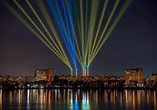
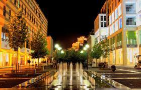
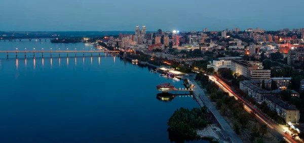
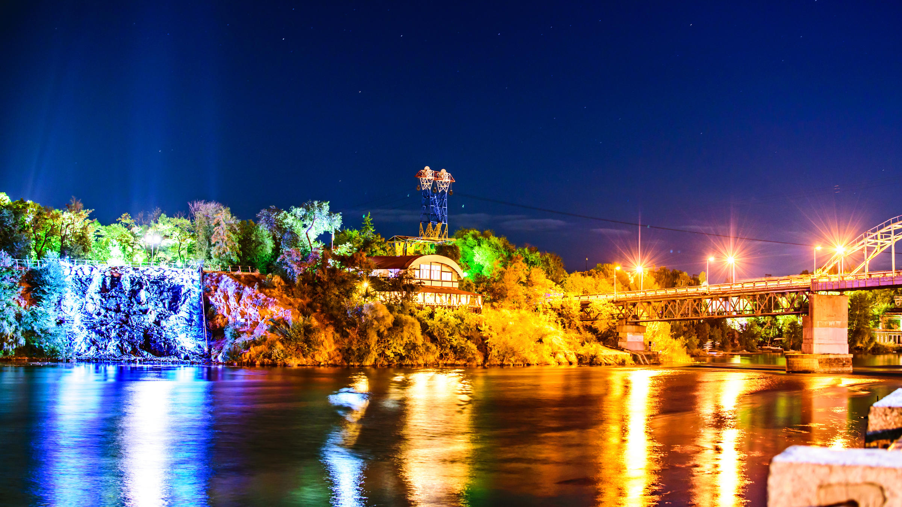

Днепр
РЫБА ТЕКСТ

СПИСОК
1.Екатеринославский бульвар
2.Смотровая площадка парка им. Шевченко
3.Набережная
4.Монастырский остров
5.Аэрокосмический музей
6.Центр «Менора»
7. Парк Лазаря Глобы
8.Водопад «Порог ревучий», Днепр
9.Полезные ссылки
Город Днепр – это город контрастов, промышленный центр Украины. Он с каждым годом становится красивее и комфортнее. Здесь достаточно много интересных мест и городских живописных пейзажей на фоне широкой реки с одноименным названием. Приехав сюда всего на один день можно успеть посетить несколько достопримечательностей. А, чтобы легче было выбрать, какие именно это будут места, смотрите нашу подборку.
1.Екатеринославский бульвар

В центральной части города есть удивительная пешеходная зона, великолепное место отдыха, прогулок и шоппинга, которое невозможно пройти мимо. Множество магазинов и бутиков, ресторанных комплексов и кафе гостеприимно принимают посетителей и украшают Екатеринославский бульвар вечерними огоньками. Очаровательные фонтаны и каменные скамейки придают этой местности особенного шарма. А загадочный памятник Бизнесмену привлекает интерес, порождая легенды о его происхождении. Если Вы хотите быстро осмотреть город, успеть вкусно покушать, обзавестись покупками и приятно отдохнуть при этом, то для этих целей бульвар подойдет лучше всего.
2.Смотровая площадка парка им. Шевченко

Если вы хотите полюбоваться завораживающими видами реки и знаменитых днепровских мостов, вам точно необходимо сюда приехать. Смотровая площадка находится немного на возвышенности и это открывает захватывающие дух пейзажи. Зеркальные потоки фонтана в форме каскада умиротворяют и придают благостной атмосферы этому месту. Тихий отдых, неспешная прогулка и спокойное созерцание здесь придают сил и энергии. Это прекрасная локация, чтобы сделать фото и оставить себе на память частичку замечательного города. Пройтись по самому парку Шевченко тоже приятное времяпрепровождение, а от смотровой площадки в обе стороны простилается набережная, которая также является достопримечательностью города.
3.Набережная

Город Днепр богат красивой и широкой рекой, поэтому каждый житель здесь знает, что за яркими эмоциями и незабываемыми прогулками лучше всего идти на набережную. Простилаясь на 30 км и являясь самой длинной в Европе, Днепровская набережная в теплый период утопает в зелени и цветах, а зимой накрывается белым бескрайним покрывалом. Завораживающие виды, приятные кафе и рестораны, фонтаны посреди реки, необычные скульптуры и памятники – все, что нужно, чтобы получить удовольствие от променада. Здесь на Фестивальном причале есть знаменитый стеклянный символ города — шар желаний, а также установлена наидлиннейшая в Украине 50-метровая скамейка с милым названием «семейная». Вечером вся линия набережной зажигается сотнями огней, отражающихся в воде. Это поистине одно из самых волшебных мест в Днепре.
4.Монастырский остров

Это также самое востребованное и предпочтительное для пикника и увлекательной прогулки место в городе. Даже приехав на один день в Днепр, побывав на острове, вы успеете увидеть сразу несколько известных локаций. Местность Монастырского острова таит в себе много легенд. Там 18 лет назад была построена Николаевская церковь, и сейчас золотой купол украшает местность и виднеется почти со всех точек города. А в 2013 году возле пешеходного моста открыли водопад «Порог Ревуцкий», которым можно полюбоваться со смотровой площадки. На острове также установлен самый крупный в Украине памятник Т.Г. Шевченко, есть много облагороженных аллей, зеленых газонов и пляжей. Здесь открываются прекрасные виды на город и на реку, и лучшего места для фото на память просто не найти.
5.Аэрокосмический музей

Днепр, как центр космонавтики, единственный в Украине город, где есть ракетно-космический музей. Открыт он с 1996 года и сейчас насчитывает тысячи экспонатов от настоящих космических станций и спутников до действующих боевых ракет. Экспозиция Аэрокосмического музея им. Макарова представлена двумя разделами – многочисленная выставка в нескольких залах и образцы ракетного оружия на уличной площадке. Если Вы интересуетесь развитием космической индустрии, желаете узнать больше об ученых и конструкторах ракет или просто хотите получить свои впечатления о масштабах аэрокосмического кораблестроения, тогда смело отправляйтесь сюда. Вход здесь бесплатный, только необходимо предварительно записаться на экскурсию по телефону.
6.Центр «Менора»

Это уникальный архитектурный ансамбль площадью 50 тыс. кв. м, над созданием которого работали специалисты с разных стран. Центр «Менора» является наибольшим в мире еврейским комплексом, состоящим из семи башен. Здесь расположено много центров для досуга, образовательных площадок, конференц-залов, музеев, рестораций и большой концертный зал. Экскурсию по центру можно заказывать, а можно исследовать его самостоятельно, но в любом случае стоит подняться на самую высокую точку, на 77 м, где расположена смотровая площадка и открывается захватывающий вид. Здесь можно вдохновиться всей панорамой города с высоты птичьего полета. В центре также есть возможность посетить галерею «Старинный Екатеринослав», синагогу «Золотая роза» и даже исторический дом купца Пчелкина. Если вы приехали в Днепр в холодное время года, можно очень познавательно провести время в центре «Менора».
7. Парк Лазаря Глобы

Парк Глобы в Днепре почти ровесник города. Его основал в середине 18 века любитель – садовник, военный Лазарь Глоба, после того как ушел в отставку. Спустя столетие парк был поделен на техническую и городскую зону. В городской зоне отдыхали горожане. А в технической части расположились школы садоводства и огородничества, различные оранжереи.
В 20 веке парк носил название летчика Чкалова. Свое настоящее название он получил в 1992 году. Сейчас это излюбленное место отдыха горожан, тут проходят городские праздники и мероприятия. На его территории расположен красивый пруд, летний театр, картинг, детская железная дорога, аттракционы. Есть возможность отправиться на прогулку на катамаране. Для отдыха с детьми это место подходит идеально.
8.Водопад «Порог ревучий», Днепр

Водопад «Порог ревучий» в Днепре – рукотворный порог на склонах Монастырского острова в месте естественного выступления горных пород. Был торжественно открыт пушечными выстрелами в 2013 году, имеет 17 метров высоты и 20 – ширины. Рядом есть самый большой в Украине памятник Т. Шевченко. Водопад стал как иллюстрацией к известному произведению Кобзаря
История водопада Ненасытец или Ревучий – самый большой и самый страшный порог Днепра. Исчез после построения и запуска Запорожской ГЭС. Казаки называли этот порог Дедом. Он имел 12 скал или рядов, которые пересекали течение. Между ними практически невозможно было пробраться. Когда кто-то плыл на кораблях Днепром, то, приближаясь к Ревучему, вытаскивал лодки, разгружал, брал в руки и нес. Только казаки научились его проходить, на пороге был так называемый «казацкий ход». Декоративный водопад «Порог ревучий» создали, чтобы напомнить о мощи и несокрушимости края и характера украинцев. Сегодня «Порог ревучий» стал топовым в списке туристических мест Днепра. Здесь всегда людно, ведь такое удивительное, хотя и искусственное, зрелище не каждый день можно увидеть. Интересные факты Днепровские пороги давно воспеты в литературе и живописи. От них веет казацкой романтикой, опасностью, рыцарством. Вот некоторые интересные факты про опасный порог Днепра, геологическую стилизацию которого можем сегодня видеть: Казаки дали название всем двенадцати скалам порога: Рваная, Служба, Остренькая, Одинцевська, Рогижна, Буравленая, Булгарская, Богатырская, Долгополая, Казанцова, Мокрые Клади и Рогатая. На Ненасытце существовал крупнейший на Днепре водопад, он имел высоту 7 метров. Течение Ревучего было настолько мощным, что из девяти порогов Днепра он единственный не замерзал зимой. Шум порога был слышен за 10 км, а в тихую погоду – за 15–20 км. Как доехать Чтобы добраться до водопада «Порог ревучий» с автовокзала, необходимо ехать автобусом №60 от проспекта Дмитрия Яворницкого до остановки «Парк Шевченко». Сюда же с железнодорожного вокзала довезет автобус №60 или трамвай №1. Далее следует двигаться к Монастырскому острову.
СПИСОК
9.Полезные ссылки
instagram
фейсбук
google